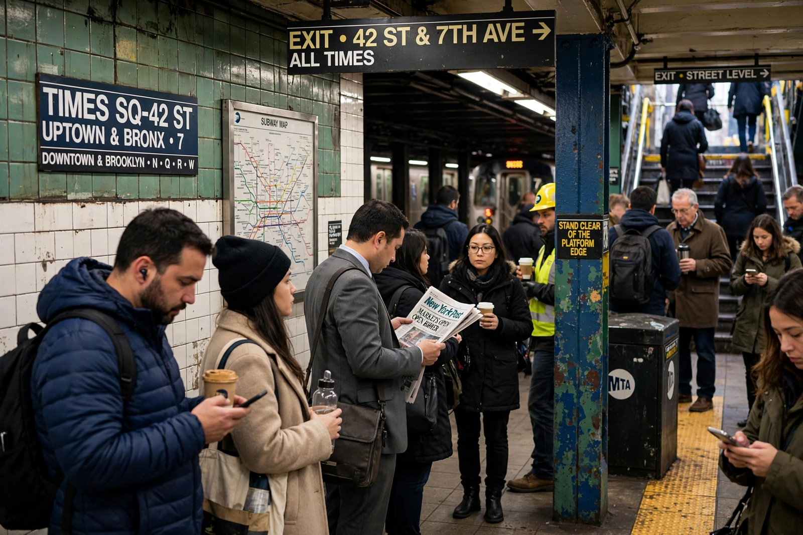

Top stories
City Hall's latest plan meets the neighbourhoods it would change

The Post, founded by Alexander Hamilton in 1801 and owned by Rupert Murdoch's News Corp, mixes hard metro news, conservative politics, Page Six gossip and muscular sports coverage in short, punchy tabloid form. The front page is a poster: one huge headline, one huge picture, and a point of view you can read from across the street.
Metro
Politics, crime and the boroughs, covered street by street
The Post's metro desk is its engine room.
Page Six
The famous gossip column's latest items
Celebrity and media items, short and sharp.
Sports
Back-page attitude for New York's teams
Yankees, Mets, Knicks, Giants and the columnists who argue about them.
Opinion
The Post's conservative editorial line
Editorials and op-eds that set the paper's political tone.
Latest & most read
- The cover story, annotated
- Page Six: the items everyone will quote
- Sports: the column that has the city's ear
- The Hamilton paper: two centuries of nerve
About
Background on this news organisation: Wikipedia article.